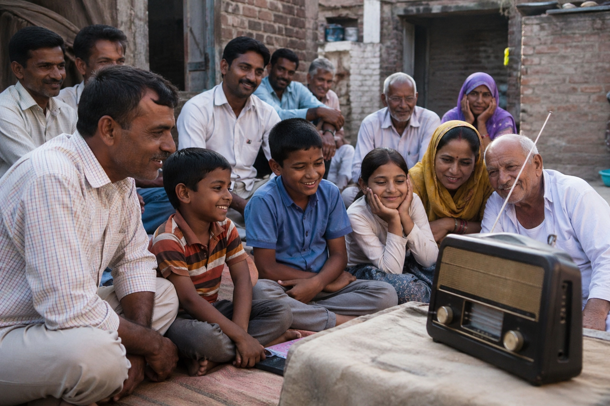

A gramophone is a vintage sound-reproducing machine that uses a hand-cranked mechanism and a needle to play shellac disc records, typically at 78 RPM, producing sound acoustically through a horn. Patented by Emile Berliner in 1887, these devices revolutionized audio playback before the electric era.
